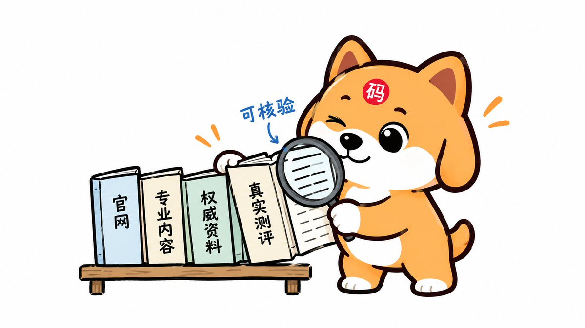
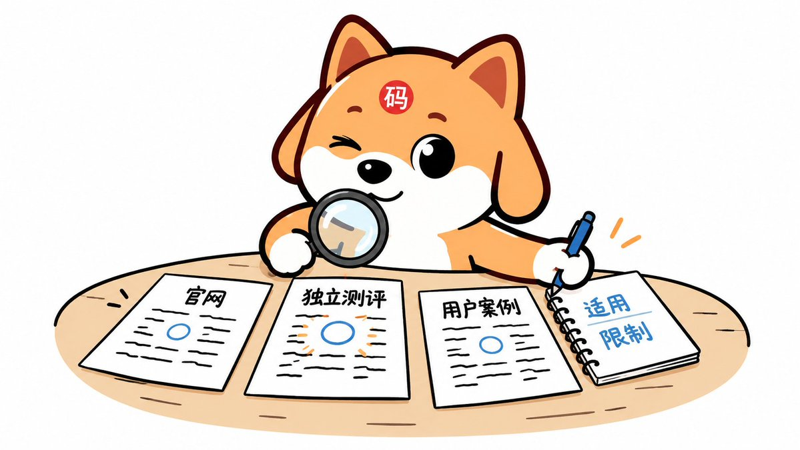

案例实战 · 9 / 14
通稿发五十遍不算证据：产品文档、案例、测评怎么补？
案例实战案例第 9 / 14 讲图文可选练习
企业内部知识库，是极好的源头

产品文档、公开案例、第三方测评，各答一个维度



一份公关稿复制五十次，事实还是薄薄一份
敢说自己的缺点，再把边界问明白

动手练习与检查工具
以下为整理时补充的练习，可按自己的业务填写；文章正文取自黄啊码原文段落。
示例 · 离线能力证据表
| 需要回答 | 应保存的依据 |
|---|---|
| 适用版本与部署环境 | 版本记录、配置与环境说明 |
| 断网期间哪些操作可用 | 实际测试步骤、结果和限制 |
| 支付方式有哪些条件 | 对应能力说明及异常情况 |
| 恢复后怎样同步和核对 | 流程、冲突处理与人工复核 |
表格定义需要核实什么，没有填入任何产品的虚构测试结果。拿到真实材料以后再写公开结论。
把这一讲用到自己的业务
- 盘点事实从业务知识中挑选客户关心的能力与限制，记录原始依据、核验人与版本。内部文件不能直接当公众可访问的证据。
- 审核公开确认内容真实且适合公开，整理成产品说明、案例或测试材料。必要信息缺失时继续核验，不给用户编出确定参数。
- 追溯来源对外部材料标注原创、转载与新增测试关系。把发布数量与独立证据数量分开，不让相同通稿互相充当背书。
- 持续核对产品变化时修订源头，再同步公开文档和相关 FAQ。保留不同条件下的结果，发现矛盾先检查版本和方法。
本节交付：一张“说法—依据—公开材料—适用条件—核验责任”对应表，关键结论可以被读者沿来源继续检查。
判断一下 · 五十个账号复制同一稿件，能算五十份独立证据吗？
本节判断题单选
选择后查看解释，可重新判断。
直接阅读答案说明
传播范围与证据独立性分开。文档、案例和测评应回答不同维度的问题，各自交代条件与过程，才便于外部核对。
动手 · 写下自己的检查记录
本节工作单填写与导出
只在当前页面整理输入，可导出到本地；不会查询外部 AI 或自动验证事实。